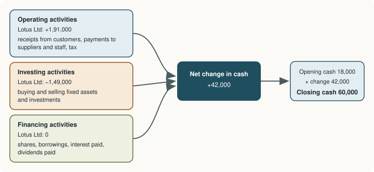

Chapter 12: The Cash Flow Statement¶
Where the cash came from and where it went: operating, investing and financing activities
Learning outcomes
After studying this chapter you should be able to:
- Explain why profit and cash differ and why users need a cash flow statement.
- Define cash and cash equivalents.
- Classify cash flows as operating, investing or financing.
- Compute cash flows from operating activities by the direct method and by the indirect method.
- Prepare a complete cash flow statement from two balance sheets and additional information.
- Read the pattern of a company's cash flows.
12.1 Profit is not cash¶
A business can be profitable and still run out of cash. Suppose a trader doubles his sales in a year by giving customers three months' credit and building up a large stock. His profit rises, but the cash from the extra sales has not yet come in, and the cash spent on stock is tied up on the shelves. If a supplier or a bank demands payment, he may be unable to pay, however good his profit looks. Many businesses that fail are profitable on paper.
The difference arises because profit is measured on the accrual basis (Chapter 1): revenue is recognised when earned and expenses when incurred, and non-cash items such as depreciation are deducted. Cash moves on its own timetable. Neither the statement of profit and loss nor the balance sheet tells a reader directly how much cash the business generated from its operations, how much it spent on new assets, or how it raised the money.
The cash flow statement answers those questions. It shows the inflows and outflows of cash and cash equivalents during a period, classified into three activities. Companies other than certain small companies are required to present one with their financial statements; the relevant standards are AS 3 and, for companies following Ind AS, Ind AS 7 (based on IAS 7), which agree on the main principles.
Users rely on it to judge:
- the business's ability to generate cash from its operations;
- its ability to pay its debts, interest and dividends;
- its need for outside finance;
- the quality of its profit: a profit that is regularly turned into cash is more reliable than one that is not.
12.2 Cash and cash equivalents¶
Cash comprises cash on hand and demand deposits with banks. Cash equivalents are short-term, highly liquid investments that are readily convertible into known amounts of cash and subject to an insignificant risk of changes in value. An investment normally qualifies as a cash equivalent only when it has a short maturity, of, say, three months or less from the date of acquisition. Shares are generally not cash equivalents, because their value can change.
Movements between cash and cash equivalents (depositing cash in a two-month deposit, for instance) are not cash flows: they are part of the business's cash management.
12.3 The three activities¶

Operating activities are the principal revenue-producing activities of the business, and other activities that are not investing or financing. Examples:
- cash receipts from the sale of goods and services, royalties, fees and commissions;
- cash payments to suppliers of goods and services;
- cash payments to and on behalf of employees;
- payments of income tax, unless they can be specifically identified with investing or financing.
Investing activities are the acquisition and disposal of long-term assets and of investments not included in cash equivalents. Examples:
- payments to buy property, plant and equipment and intangible assets;
- receipts from the sale of such assets;
- payments to buy, and receipts from selling, shares and debentures of other entities;
- loans made to others and their repayment.
Financing activities change the size and composition of the owners' capital and the borrowings of the business. Examples:
- proceeds from issuing shares;
- proceeds from issuing debentures and raising loans;
- repayments of borrowings, redemption of debentures and preference shares, buy-back of shares;
- for a non-financial business, interest and dividends paid.
Interest, dividends and taxes¶
| Item | Non-financial business (under AS 3) | Financial business |
|---|---|---|
| Interest paid | Financing | Operating |
| Interest received | Investing | Operating |
| Dividends received | Investing | Operating |
| Dividends paid | Financing | Financing |
| Income tax paid | Operating (unless identified with investing or financing) | Operating |
Table 12.1. Classification of interest, dividends and taxes. Ind AS 7 allows some choice for these items, provided the choice is applied consistently; this book follows the classification in the table.
Non-cash transactions¶
Some important transactions involve no cash: buying a building by issuing shares to the seller, converting debentures into shares. They are left out of the cash flow statement, but disclosed in the notes so that users are aware of them.
12.4 Operating cash flow: direct and indirect methods¶
Cash flows from operating activities can be reported in two ways.
The direct method lists the major classes of gross cash receipts and gross cash payments: cash received from customers, cash paid to suppliers, cash paid to employees and for expenses, tax paid. Each is found by adjusting the corresponding revenue or expense for the change in the related receivable or payable.
The indirect method starts with the profit before tax and adjusts it for (a) non-cash items such as depreciation, (b) items that belong to investing or financing activities, such as a profit or loss on sale of fixed assets and interest expense, and (c) changes in working capital (inventories, receivables, payables).
Both methods give the same figure for net cash from operating activities. The direct method shows more about the sources and uses of cash and is encouraged by the standards; the indirect method is far more common in practice because it is easier to prepare from the financial statements and it shows why profit and cash differ.
Example 12.1 Operating cash flow by the direct method
A trading business provides: sales (all on credit) ₹5,00,000; trade receivables at the start ₹40,000 and at the end ₹55,000; purchases (all on credit) ₹3,00,000; trade payables at the start ₹30,000 and at the end ₹38,000; operating expenses (excluding depreciation) ₹80,000; outstanding expenses at the start ₹5,000 and at the end ₹3,000; income tax paid ₹20,000.
| Particulars | Working | ₹ |
|---|---|---|
| Cash received from customers | 5,00,000 + 40,000 − 55,000 | 4,85,000 |
| Cash paid to suppliers | 3,00,000 + 30,000 − 38,000 | (2,92,000) |
| Cash paid for operating expenses | 80,000 + 5,000 − 3,000 | (82,000) |
| Cash generated from operations | 1,11,000 | |
| Income tax paid | (20,000) | |
| Net cash from operating activities | 91,000 |
Receivables rose by ₹15,000, so customers paid ₹15,000 less than the sales. Payables rose by ₹8,000, so suppliers were paid ₹8,000 less than the purchases. Outstanding expenses fell by ₹2,000, so ₹2,000 more was paid than the expense charged.
The indirect method step by step¶
| Step | Adjustment to profit before tax | Reason |
|---|---|---|
| 1 | Add depreciation and amortisation | Expenses that use no cash |
| 2 | Add loss on sale of fixed assets or investments; deduct profit on sale | The sale proceeds are investing cash flows |
| 3 | Add interest expense (finance cost) | Interest paid is a financing cash flow |
| 4 | Deduct interest and dividends received | They are investing cash flows |
| 5 | = Operating profit before working capital changes | |
| 6 | Deduct increases, and add decreases, in current assets (inventories, receivables, prepaid expenses) | More cash tied up, or released |
| 7 | Add increases, and deduct decreases, in current liabilities (payables, outstanding expenses) | Payment postponed, or catching up |
| 8 | = Cash generated from operations | |
| 9 | Deduct income tax paid | Tax is an operating cash flow |
| 10 | = Net cash from operating activities |
Table 12.2. The indirect method.
Key idea
For working capital: an increase in a current asset uses cash (deduct it); an increase in a current liability saves cash (add it). Decreases work the other way round.
12.5 A complete example¶
Example 12.2 Cash flow statement of Lotus Ltd (indirect method)
Balance Sheets of Lotus Ltd as at 31 March
| Particulars | 2026 (₹) | 2025 (₹) |
|---|---|---|
| Equity and liabilities | ||
| Equity share capital | 6,00,000 | 5,00,000 |
| General reserve | 80,000 | 50,000 |
| Surplus in statement of profit and loss | 1,40,000 | 90,000 |
| 10% Debentures | 1,00,000 | 1,50,000 |
| Trade payables | 70,000 | 60,000 |
| Outstanding expenses | 10,000 | 12,000 |
| Provision for tax | 30,000 | 25,000 |
| Total | 10,30,000 | 8,87,000 |
| Assets | ||
| Property, plant and equipment (net) | 7,20,000 | 6,00,000 |
| Non-current investments | 50,000 | 80,000 |
| Inventories | 1,10,000 | 95,000 |
| Trade receivables | 85,000 | 90,000 |
| Prepaid expenses | 5,000 | 4,000 |
| Cash and cash equivalents | 60,000 | 18,000 |
| Total | 10,30,000 | 8,87,000 |
Additional information for 2025-26
- Depreciation charged on property, plant and equipment was ₹60,000.
- A machine with a book value of ₹30,000 was sold for ₹25,000.
- Investments costing ₹30,000 were sold for ₹36,000.
- Debentures of ₹50,000 were redeemed at par on 1 April 2025; interest of ₹10,000 was paid on the remaining debentures.
- Tax of ₹35,000 was provided for the year.
- A dividend of ₹40,000 was paid.
Working 1: profit before tax. The surplus account explains the change from ₹90,000 to ₹1,40,000:
| Particulars | ₹ |
|---|---|
| Closing surplus | 1,40,000 |
| Add: Transfer to general reserve (80,000 − 50,000) | 30,000 |
| Add: Dividend paid | 40,000 |
| Less: Opening surplus | (90,000) |
| Profit after tax | 1,20,000 |
| Add: Tax provided | 35,000 |
| Profit before tax | 1,55,000 |
Working 2: property, plant and equipment (net book value).
| Particulars | ₹ | Particulars | ₹ |
|---|---|---|---|
| To Balance b/d | 6,00,000 | By Depreciation | 60,000 |
| To Bank: purchases (balancing figure) | 2,10,000 | By Bank: sale proceeds | 25,000 |
| By Loss on sale | 5,000 | ||
| By Balance c/d | 7,20,000 | ||
| Total | 8,10,000 | Total | 8,10,000 |
Working 3: provision for tax.
| Particulars | ₹ | Particulars | ₹ |
|---|---|---|---|
| To Bank: tax paid (balancing figure) | 30,000 | By Balance b/d | 25,000 |
| To Balance c/d | 30,000 | By Statement of profit and loss | 35,000 |
| Total | 60,000 | Total | 60,000 |
Working 4: investments. 80,000 − 30,000 sold = 50,000, the closing balance, so none were bought. Profit on sale = 36,000 − 30,000 = ₹6,000.
Cash Flow Statement of Lotus Ltd for the year ended 31 March 2026
| Particulars | ₹ | ₹ |
|---|---|---|
| A. Cash flows from operating activities | ||
| Profit before tax | 1,55,000 | |
| Adjustments for: | ||
| Depreciation | 60,000 | |
| Loss on sale of machine | 5,000 | |
| Profit on sale of investments | (6,000) | |
| Interest on debentures | 10,000 | 69,000 |
| Operating profit before working capital changes | 2,24,000 | |
| Increase in inventories | (15,000) | |
| Decrease in trade receivables | 5,000 | |
| Increase in prepaid expenses | (1,000) | |
| Increase in trade payables | 10,000 | |
| Decrease in outstanding expenses | (2,000) | (3,000) |
| Cash generated from operations | 2,21,000 | |
| Income tax paid | (30,000) | |
| Net cash from operating activities | 1,91,000 | |
| B. Cash flows from investing activities | ||
| Purchase of property, plant and equipment | (2,10,000) | |
| Sale of machine | 25,000 | |
| Sale of investments | 36,000 | |
| Net cash used in investing activities | (1,49,000) | |
| C. Cash flows from financing activities | ||
| Issue of equity shares | 1,00,000 | |
| Redemption of debentures | (50,000) | |
| Interest paid on debentures | (10,000) | |
| Dividend paid | (40,000) | |
| Net cash from financing activities | 0 | |
| Net increase in cash and cash equivalents (A + B + C) | 42,000 | |
| Cash and cash equivalents at the beginning of the year | 18,000 | |
| Cash and cash equivalents at the end of the year | 60,000 |
Check. 1,91,000 − 1,49,000 + 0 = 42,000; 18,000 + 42,000 = 60,000, which agrees with the balance sheet.
Caution
Do not add back the transfer to general reserve or the dividend in the operating section. They are appropriations made after profit, so the profit before tax already excludes them; Working 1 adds them back only to recover the profit from the change in the surplus. The dividend appears in the financing section, as a cash outflow, because it was paid.
12.6 Reading a cash flow statement¶
The signs of the three sections tell a story about the business.
| Operating | Investing | Financing | A typical reading |
|---|---|---|---|
| Positive | Negative | Negative | A healthy, mature business: its operations pay for new assets and for returns to lenders and owners |
| Positive | Negative | Positive | A growing business: operations generate cash, but expansion needs more, raised from lenders or owners |
| Negative | Negative | Positive | A young or struggling business living on outside finance; sustainable only for a time |
| Negative | Positive | Negative or positive | A business selling assets to survive or to repay debt; a warning sign if it lasts |
Table 12.3. Patterns of cash flow.
Lotus Ltd generated ₹1,91,000 from operations, more than its profit after tax of ₹1,20,000, mainly because depreciation of ₹60,000 is not a cash cost. It spent heavily on new plant (₹2,10,000), paying for it partly from operations and partly from asset sales; it raised ₹1,00,000 from new shares and used the same amount to repay debentures, pay interest and pay a dividend. It ended the year with more cash than it started. That is the profile of a sound business that is investing for growth.
A useful single figure is free cash flow: net cash from operating activities less capital expenditure (here 1,91,000 − 2,10,000 = −₹19,000). A negative figure in a year of heavy investment is not alarming in itself, but a business whose free cash flow is negative year after year depends on outside finance.
12.7 Summary¶
Summary
- Profit and cash differ because of accruals, non-cash items and working capital; the cash flow statement explains the change in cash and cash equivalents.
- Cash equivalents are short-term, highly liquid investments with insignificant risk of change in value, normally maturing within three months.
- Operating activities are the main revenue-producing activities; investing activities are the purchase and sale of long-term assets and investments; financing activities change capital and borrowings.
- For non-financial businesses, interest and dividends paid are financing; interest and dividends received are investing; tax paid is operating.
- The direct method lists gross receipts and payments; the indirect method adjusts profit before tax for non-cash items, investing and financing items and working capital changes. Both give the same answer.
- Increases in current assets use cash; increases in current liabilities save cash.
- The pattern of signs of the three sections, and free cash flow, show whether a business funds itself or depends on outside money.
12.8 Exercises¶
Exercise 1
Classify each as operating, investing or financing for a manufacturing company: (a) cash paid to suppliers; (b) purchase of machinery; (c) issue of debentures; (d) dividend received on shares held; (e) interest paid on a bank loan; (f) income tax paid; (g) sale of an old building; (h) buy-back of own shares.
Answer
(a) operating; (b) investing; (c) financing; (d) investing; (e) financing; (f) operating; (g) investing; (h) financing.
Exercise 2
Profit before tax ₹2,40,000; depreciation ₹50,000; profit on sale of land ₹20,000; interest expense ₹15,000; increase in inventories ₹30,000; decrease in receivables ₹12,000; decrease in payables ₹8,000; tax paid ₹55,000. Find net cash from operating activities.
Answer
Operating profit before working capital changes = 2,40,000 + 50,000 − 20,000 + 15,000 = ₹2,85,000. Working capital: −30,000 + 12,000 − 8,000 = −₹26,000. Cash generated = ₹2,59,000. Less tax paid ₹55,000: ₹2,04,000.
Exercise 3
Machinery (net) was ₹4,00,000 at the start of the year and ₹4,80,000 at the end. Depreciation for the year was ₹45,000. A machine with a book value of ₹25,000 was sold for ₹32,000. Find the cash paid for new machinery and the cash flow from investing activities relating to machinery.
Answer
Purchases = closing 4,80,000 + depreciation 45,000 + book value sold 25,000 − opening 4,00,000 = ₹1,50,000. Investing cash flow = −1,50,000 + 32,000 = −₹1,18,000. (The profit on sale of ₹7,000 is deducted in the operating section.)
Exercise 4
Provision for tax was ₹40,000 at the start and ₹55,000 at the end of the year; the tax charged in the statement of profit and loss was ₹70,000. How much tax was paid?
Answer
Tax paid = 40,000 + 70,000 − 55,000 = ₹55,000.
Exercise 5
A company's net cash from operating activities has been negative for three years, while its profit has been positive. Suggest two reasons and say why a lender should be concerned.
Answer
Possible reasons: sales are growing on long credit, so receivables are rising faster than collections; inventory is building up, perhaps because goods are not selling; or revenue is being recognised aggressively. A lender should be concerned because interest and repayments must be paid in cash; a business whose operations consume cash must keep borrowing or selling assets to pay its lenders, and its reported profit may not be of good quality.
Exercise 6
Cash sales ₹1,20,000; credit sales ₹3,80,000; receivables rose from ₹60,000 to ₹75,000 during the year. Compute the cash received from customers.
Answer
Cash received = cash sales 1,20,000 + credit sales 3,80,000 + opening receivables 60,000 − closing receivables 75,000 = ₹4,85,000.
12.9 Quiz¶
Check your understanding of Chapter 12
Exercise 1
For a manufacturing company, dividend paid is classified as a cash flow from
- operating activities
- investing activities
- financing activities
Answer
financing activities
Exercise 2
Under the indirect method, an increase in trade receivables is
- added to profit
- deducted from profit
- ignored
Answer
deducted from profit
More of the sales are still unpaid, so less cash has come in than the profit suggests.
Exercise 3
Depreciation is added back to profit in the indirect method because it
- is a source of cash
- is an expense that uses no cash
- is a financing item
Answer
is an expense that uses no cash
Exercise 4
Opening cash ₹25,000; operating +₹80,000; investing −₹1,10,000; financing +₹40,000. What is closing cash, in rupees?
Answer
35000 / 35,000 / ₹35,000
Exercise 5
Which of these is normally a cash equivalent?
- Shares of a listed company
- A bank deposit maturing two months after it was made
- A five-year government bond bought at issue
- Inventory
Answer
A bank deposit maturing two months after it was made
Exercise 6
Profit on sale of a machine is, in the indirect method,
- added to profit before tax
- deducted from profit before tax
Answer
deducted from profit before tax
The whole sale proceeds are shown under investing activities.